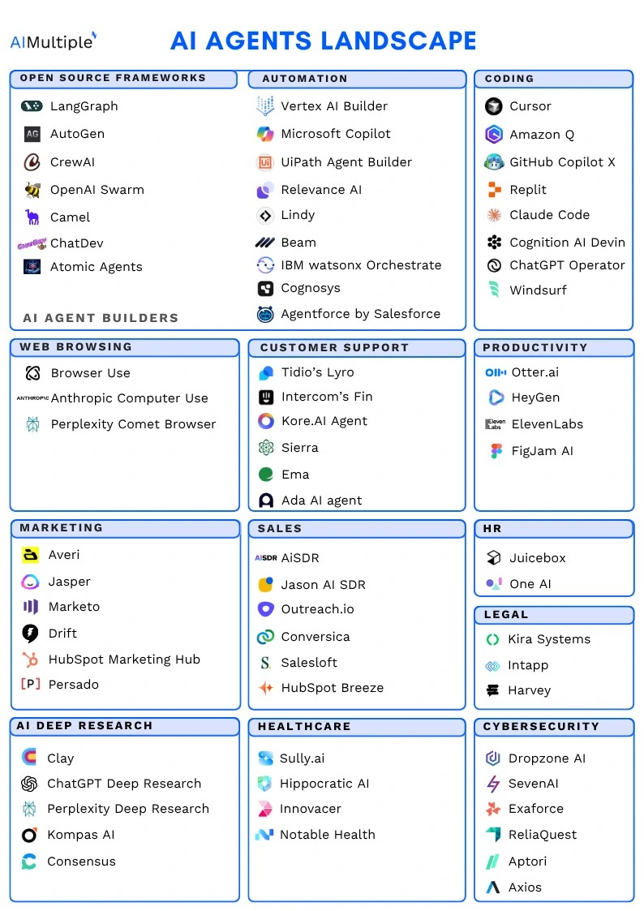
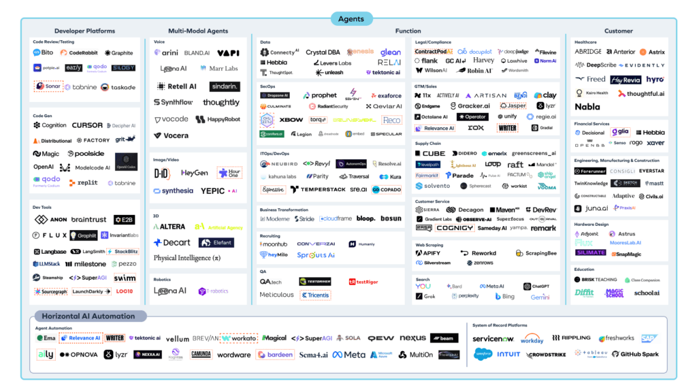
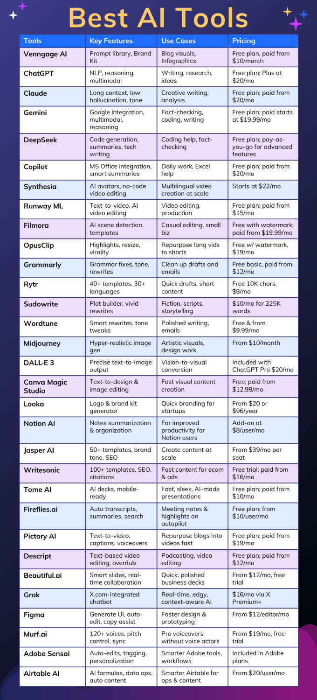
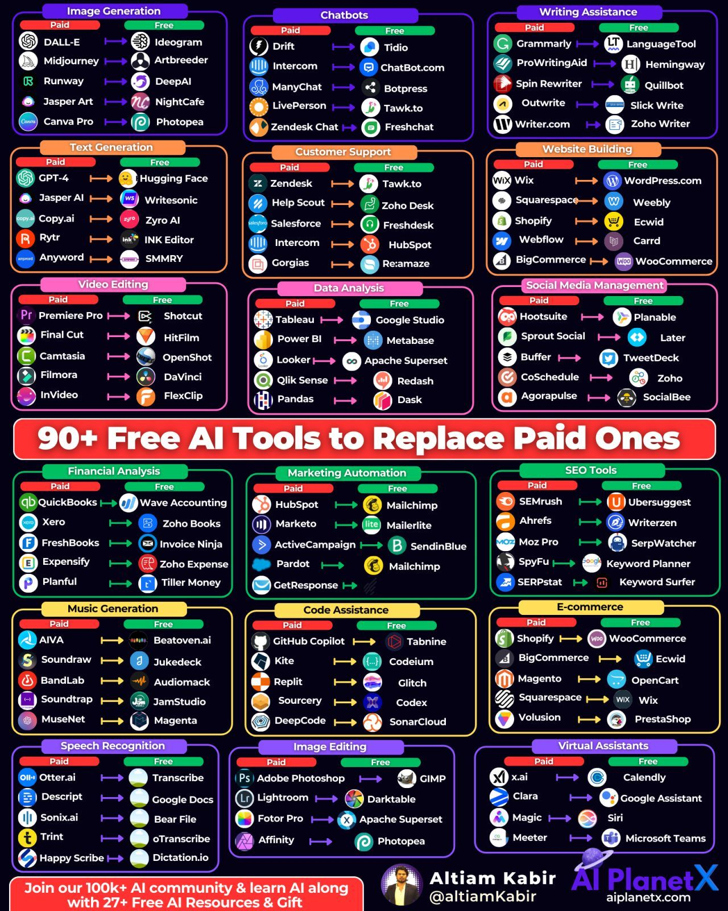
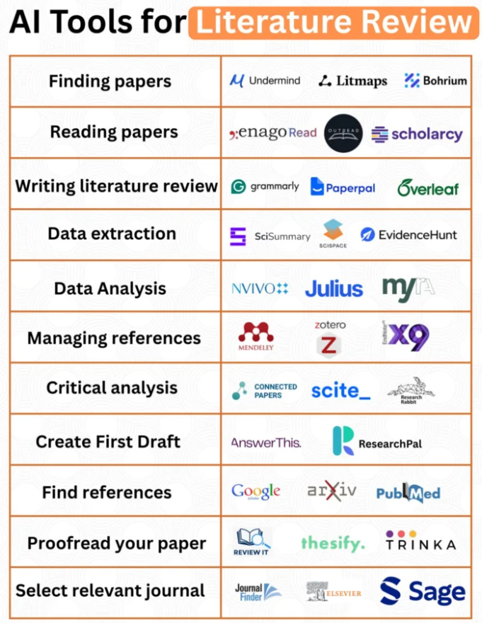

Welcome to my digital canvas where mathematics meets art. Explore dynamic geometric patterns and interactive visualisations.
Each pattern is generated using mathematical algorithms that create beautiful, ever-changing geometric forms. Click the buttons above to explore different artistic interpretations of mathematical concepts.
Research Assistant with over 7 years of experience in data science and interactive visualisation, specialising in healthcare research applications.
Role: Lead Developer
Designed and developed an interactive R Shiny and React application that transforms kidney allocation decision-making. The platform is used by hospital's clinician.
Technologies: R, Shiny, React, Data Visualisation
Link: KTSS
Role: Designer & Developer
Created a resource for single-cell analysis methodology comparison. The interactive dashboard allows researchers to explore and compare benchmarking results dynamically.
Technologies: R, Shiny, Quarto, Data Visualisation
Link: Benchmark dashboard
It’s not the strongest of the species that survive, nor the most intelligent, it’s the one most adaptable to change “Charles Darwin”
Python, Statistics, Linear Algebra, and Basic Machine Learning Concepts
Supervised Learning, Unsupervised Learning, Model Evaluation, and Feature Engineering
Neural Networks, CNNs, RNNs, and Transfer Learning with TensorFlow/PyTorch
NLP, Computer Vision, Reinforcement Learning, and Domain-Specific Applications
MLOps, Model Deployment, Monitoring, and Ethical AI Implementation





Exploring the intersection of technology, spirituality, and mathematical beauty.
Creating visual representations of mathematical concepts through code. Fractals, geometric patterns, and algorithmic art that reveals the beauty hidden in equations.
The golden ratio (φ) creates naturally occurring spirals found throughout nature, from nautilus shells to galaxy formations.
Using algorithms to generate organic, flowing patterns that mirror natural phenomena like water currents and wind patterns.
The Flower of Life pattern demonstrates how mathematical principles underlie sacred geometric forms across cultures.
Exploring self-similar patterns that exist at multiple scales, revealing the infinite complexity within simple mathematical rules.
The same mathematical principles that govern our data models also create the most beautiful patterns in nature. This intersection of utility and beauty drives my passion for creating meaningful, impactful applications that serve both analytical and aesthetic purposes.
Exploring the holistic integration of consciousness, energy, and spiritual practices with modern technology.
Exploring consciousness, mindfulness, and the integration of ancient wisdom with modern technology. Understanding how digital tools can support spiritual growth, meditation practices, and self-discovery in our interconnected world.
Understanding the vibrational properties of crystals and their applications in energy work, chakra balancing, and spiritual healing practices.
Exploring intuitive development, psychic abilities, and divination systems as tools for personal growth and spiritual insight.
Integrating mind-body-spirit practices for complete wellness, combining ancient wisdom with modern understanding of health and consciousness.